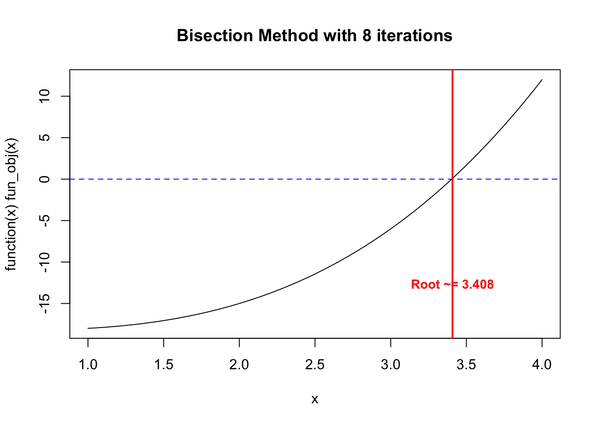

On the top, we have linear functions, such as \(y=f(x) = ax + b\) or in the linear regression \(y=X\beta +\epsilon\). It is a small class of the functions, and may be relatively limited.
E.g., what if we have a quadratic relationship? Then \(y=f(x) = ax^2 + bx + c\).
Such nonlinear relationship is very common, , such as \(f(x) = a\sin(bx + c)\) or \(f(x) = a\exp(bx) + c\), and they may not have a closed-form solution like in the linear regression case.
From now on, we will be talking about the numerical approaches to solve these problems.
3.2 Type of Optimization Algorithms
There are in general two types of the optimization algorithms: (1). deterministic and (2). metaheuristic. Deterministic and metaheuristic algorithms represent two distinct paradigms in optimization.
*. Deterministic methods: such as gradient descent, produce the same solution for a given input and follow a predictable path toward an optimum.
*. In contrast, metaheuristic approaches: incorporate randomness and do not guarantee the best possible solution. However, they are often more effective at avoiding local optima and exploring complex search spaces.
3.3 Deterministic Algorithms
Numerical approximation, what you learned in the mathematical optimization course. Some of the algorithms include:
Gradient Descent
Newton’s Method
Conjugate Gradient Method
Quasi-Newton Methods (e.g., BFGS)
Interior Point Methods
They often rely on the Karush–Kuhn–Tucker (KKT) conditions.
3.3.1 Root finding
The root finding is probably the first numerical approach you learned in the numerical analysis course. Consider a function \(f: \mathbb R\to \mathbb R\). The point \(x\in \mathbb R\) is called a root of \(f\) if \(f(x) = 0\).
Q: Why do we care about the root finding?
This idea has broad applications. While finding the values of x such that f(x) = 0 is useful in many settings, a more general task is to determine the values of x for which f(x) = y. The same techniques used to find the roots of a function can be applied here by rewriting the problem as \[
\tilde{f}(x) := f(x) - y = 0.
\] In this way, new function \(\tilde{f}(x)\) has a root at the solution to, \(f(x)=y\), original equation.
For linear function, it is trivial. For quadratic function, we can use the quadratic formula, i.e., \[
x = \frac{-b \pm \sqrt{b^2 - 4ac}}{2a}.
\] However, for more complex functions, we need to use numerical methods to solve it iteratively. Below, we are going to go over some numerical algorithms.
3.3.2 One-dimensional case
We first look at the one-dimensional case. The function we want to optimize is
\[f(x) = x^3 - x + 1\]
3.3.3 Bisection method
Bisection method is just like a binary search.
Step 1. Selection two points \(a,b\in \chi \subseteq \mathbb R\), where \(\chi\) is the domain of \(f\). Make sure that \(a\) and \(b\) have opposite signs, i.e., \(f(a)f(b) < 0\).
Step 2. Compute the midpoint \(c = (a+b)/2\).
Step 3. Evaluate and check the sign of \(f(c)\). If \(f(c)\) has the same sign as \(f(a)\), then set \(a=c\). Otherwise, set \(b=c\).
Step 4. Iterate Steps 2 and 3 until the interval \([a,b]\) is sufficiently small.
The intuition here is that we are shirking the search space \(\chi\) by half in each iteration.
Q: Why this algorithm work and what are the assumptions? 1. We require the function to be continuous 2. We require the function to have opposite signs at the two endpoints \(a,b\in\chi\subseteq \mathbb R\). 3. We do not require the differentiability!
Q: But what’s the cost?
Q: Can this work for every function?
3.3.3.1 Example
Suppose the design region is
a <-1b <-4curve(0.5*x^3-0.5*x -18, from = a, to = b, xlab ="x", ylab ="f(x)")fun_obj <-function(x) 0.5*x^3-0.5*x -18my_bisec <-function(fun_obj, a, b, tol =1E-2, ind_draw =FALSE) {if (fun_obj(a) *fun_obj(b) >0) {stop("f(a) and f(b) must have opposite signs!") } iter <-0while ((b - a) /2> tol) { c <- (a + b) /2if (ind_draw ==TRUE) {# Draw vertical lineabline(v = c, col ="red", lty =2)# Label the iteration above the x-axistext(c, par("usr")[3] +2, labels = iter +1, col ="blue", pos =3, cex =0.8) }if (fun_obj(c) ==0) {return(c) } elseif (fun_obj(a) *fun_obj(c) <0) { b <- c } else { a <- c } iter <- iter +1 } val_x <- (a + b) /2 val_fx <-fun_obj(val_x)return(list(root = val_x, f_root = val_fx, iter = iter))}# Run itres_plot <-my_bisec(fun_obj, a, b, ind_draw =TRUE)
res <-my_bisec(fun_obj, a, b)plot(function(x) fun_obj(x), from = a, to = b)abline(h =0, col ="blue", lty =2)title(main =paste0("Bisection Method with ", res$iter, " iterations"))abline(v = res$root, col ="red", lwd =2)text(res$root, par("usr")[3] +5, labels =paste0("Root ~= ", round(res$root, 3)), col ="red", pos =3, cex =0.9, font =2)

3.3.4 Newton-Raphson method
The Newton-Raphson method (or simply Newton’s method) is an iterative numerical method for finding successively better approximations to the roots (or zeroes) of a real-valued function.
Here, we assume that the function \(f\) is differentiable. The idea here is to use the Taylor expansion of the function. Suppose we are search a small neighbour of the solution \(x \in \mathbb R\), say \(x_j \in \mathbb R\) is a small number. Then Then we first order Taylor series to approximate \(f(x_j+h)\) around \(x_j\) is \[
f(x)\approx f(x_j) + f^\prime(x_j) (x-x_j),
\] where \(f^\prime(x) := \partial_x f(x)\) is the first derivative of \(f(x)\). So the root of this approximation can be improved by updating its place to where \(f(x_{j+1}) = 0\).
So if \(f(x_j+h)\) is the root, then we have \[ 0 = f(x_j) + f^\prime(x_j) h \implies h = -\frac{f(x_j)}{f^\prime(x_j)}.\]
Then, we can come back to \(x_{j+1}= x_j+h\), and plug the value of \(h\) in from above, we have \[
x_{j+1} = x_j - \frac{f(x_j)}{f^\prime(x_j)}.
\]
The algorithm is given as below:
Let \(f:\mathbb R\to\mathbb R\) be differentiable.
Step 0: Choose a function \(f(x)\): This is the function for which you want to find a root (i.e., solve \(f(x) = 0\)).
Step 1: Calculate the derivative \(f^\prime(x)\): You will need it to apply the formula.
Step 2: Make an initial guess \(x_0\): Select a starting point \(x_0\) near the expected root.
Step 3: Update the estimate: Use the Newton’s method formula to compute the next estimate \(x_1\) using \(x_0\) by \[x_{j+1} = x_j - \frac{f(x_j)}{f^\prime(x_j)}.\]
Step 4: Repeat Steps 2 and 3 until the values converge to a root or reach a desired tolerance.
## Function and derivativef <-function(x) 0.5*x^3-0.5*x -18df <-function(x) 1.5*x^2-0.5## Newton–Raphson with iterate trackingnewton_raphson <-function(f, df, x0, tol =1e-5, maxit =100, eps =1e-5) { x <- x0 xs <- x0 # store iterates (x0, x1, x2, ...)for (k in1:maxit) { fx <-f(x) dfx <-df(x) x_new <- x - fx/dfx xs <-c(xs, x_new)if (abs(x_new - x) < tol ||abs(fx) < tol) {return(list(root = x_new, iter = k, path = xs)) } x <- x_new }list(root = x, iter = maxit, path = xs)}## Starting point
If we start at -1 which is far away from
x0 <--1res <-newton_raphson(f, df, x0)a <--2; b <-5plot(function(x) f(x), from = a, to = b, xlab ="x", ylab ="f(x)",main =paste("Newton-Raphson (Iterations:", res$iter, ")"))abline(h =0, col ="blue", lty =2)## Draw vertical lines for each iterate with labels 0,1,2,...for (i inseq_along(res$path)) { xi <- res$path[i]abline(v = xi, col ="red", lty =2)text(xi, par("usr")[3] +2, labels = i -1, col ="blue", pos =3, cex =0.9)}## Final root marker + labelabline(v = res$root, col ="darkgreen", lwd =2)text(res$root, par("usr")[3] +5,labels =paste0("Root ~= ", round(res$root, 5)," ; f(root) ~= ", signif(f(res$root), 3)),col ="darkgreen", pos =3, cex =0.95, font =2)
x0 <-3res <-newton_raphson(f, df, x0)## Plot range that shows the iterates and roota <--2; b <-5plot(function(x) f(x), from = a, to = b, xlab ="x", ylab ="f(x)",main =paste("Newton-Raphson (Iterations:", res$iter, ")"))abline(h =0, col ="blue", lty =2)## Draw vertical lines for each iterate with labels 0,1,2,...for (i inseq_along(res$path)) { xi <- res$path[i]abline(v = xi, col ="red", lty =2)text(xi, par("usr")[3] +2, labels = i -1, col ="blue", pos =3, cex =0.9)}## Final root marker + labelabline(v = res$root, col ="darkgreen", lwd =2)text(res$root, par("usr")[3] +5,labels =paste0("Root ~= ", round(res$root, 5)," ; f(root) ~= ", signif(f(res$root), 3)),col ="darkgreen", pos =3, cex =0.95, font =2)
Assumptions: \(f\) is differentiable in a neighborhood of the root \(r\).
Failure cases: if \(f^\prime(x_j)=0\) (or is very small), the update is ill-defined/unstable; if the initial guess is far, the method can diverge or jump to a different root.
Practical checks: stop when \(|f(x_j)|\le \delta\) or \(|x_{j+1}-x_j| \le \delta\) is below tolerance \(\delta\).
3.3.5 Second Method
The secant method can be thought of as a finite-difference approximation of Newton’s method, so it is considered a quasi-Newton method. It is simialr to Newton’s method, but it does not require the computation of the derivative of the function. Instead, it approximates the derivative using two previous points.
In the second method, we require the first two points, say \(x_0, x_1 \in \mathbb R\). Then, we can approximate the derivative of \(f\) at \(x_1\) using the finite difference formula. Instead of calculate the derivative \(f^\prime(x_1)\), we approximate it as using the secant line. In calculate, we know that, \(f^\prime(x_1) \approx \frac{f(x_1)-f(x_0)}{x_1-x_0}\), if \(x_1\) and \(x_0\) are close. Then, we can plug this approximation into the Newton’s update formula to get \[x_j = x_{j-1} - f(x_{j-1}) \frac{x_{j-1}-x_{j-2}}{f(x_{j-1}) - f(x_{j-2})} = \frac{x_{j-2} f\left(x_{j-1}\right)-x_{j-1} f\left(x_{j-2}\right)}{f\left(x_{j-1}\right)-f\left(x_{j-2}\right)} .\]
3.4 Hill climbing
In numerical analysis, hill climbing is a mathematical optimization technique which belongs to the family of local search. The Newton method and secant method can be thought as questions in hill climbing.
The algorithm starts with an arbitrary solution to a problem, then iteratively makes small changes to the solution, each time moving to a neighboring solution that is better than the current one. The process continues until no neighboring solution is better than the current solution, at which point the algorithm terminates.
In the world of optimization, finding the best solution to complex problems can be challenging, especially when the solution space is vast and filled with local optima.
3.4.1 In R
uniroot(), optim() , nlm(), and mle() functions. Note that you may approximate the derivative/gradient.
3.5 Converegence
In order to compare the efficiency of the set of algorithms, one may compare their abilities for finding the optimals. However, what if, say, two algorithms both can find optimals, which one is better? The convergence rate comes in. Convergence rate is a measure of how quickly an iterative algorithm approaches its limit or optimal solution, which mean, how fast the algorithm converges to the optimals.
In the previous lecture(s), we saw that we can use R functions such microbenchmark::microbenchmark(), to measure the performance. However, it may takes a long time and a lot of computational resources. For such cases, we may use the theoretical convergence rate to compare the efficiency of the algorithms.
The convergence rate is often classified into several categories. It acts like the sequence \(\{x_j\}\) we learned in grade schools. Here, \(\{x_j\}\) is a sequence of estimates generated by the algorithm at each iterations, and \(x^*\) is the true solution or optimal value we are trying to reach. The error at iteration \(n\) is defined as \(e_j = d(x_j,x^*)\), where the typical metric here is the absolute distance \(d(x_j,x^*)=|x_j-x^*|\) (note, in spaces, different metric to define the distance). The convergence rate describes how quickly this error sequence \(\{e_j\}\) decreases as \(j\) increases. For
If order \(q = 1\) and \(0 < \mu < 1\), the sequence \(\{x_j\}\in\mathbb R^d\) converges to \(x^*\) linearly. That is, \(x_j\to x^*\) as \(j\to\infty\) in \(\mathbb R^d\) if there existence a constant \(\mu\) such that \[
\frac{\left\|x_{n+1}-x_{\infty}\right\|}{\left\|x_n-x_{\infty}\right\|} \le \mu,\quad \text{ as } \quad n\to\infty.
\] This means that the error decreases proportionally to its current value, leading to a steady but relatively slow convergence.
3.5.2 Superlinear Convergence
Suppose \(\{x_n\}\) converges to \(x^*\), if order \(q = 1\) and \(\mu = 0\), the sequence \(\{x_n\}\) converges to \(x^*\) superlinearly. That is, \(x_n\) is said to be converges to \(x^*\) as \(n\to\infty\) superlinearly if
\[
\lim _{n \to \infty} \frac{\left\|x_{n+1}-x_{\infty}\right\|}{\left\|x_n-x_{\infty}\right\|}=0.
\] It is clearly that the superlinear is a stronger condition than the linear convergence, such that \(\mu=0\).
3.5.3 Quadratic Convergence
If order \(q = 2\) and \(\mu > 0\), the sequence \(\{x_n\}\) converges to \(x^*\) quadratically. That is, \(x_n\) is said to be converges to \(x^*\) as \(n\to\infty\) quadratically if
Many of the heuristic algorithms are inspired by the nature, such as the genetic algorithm (GA) and particle swarm optimization (PSO). These algorithms are often used for complex optimization problems where traditional methods may struggle to find a solution. Some of the popular heuristic algorithms include:
Genetic Algorithm (GA)
Particle Swarm Optimization (PSO)
Simulated Annealing (SA)
Ant Colony Optimization (ACO)
3.6.1 Simulating Annealing
Simulated annealing (SA) is a stochastic technique for approximating the global optimum of a given function.
Inspired by the physical process of annealing in metallurgy, Simulated Annealing is a probabilistic technique used for solving both combinatorial and continuous optimization problems.
What is Simulated Annealing?
Simulated Annealing is an optimization algorithm designed to search for an optimal or near-optimal solution in a large solution space. The name and concept are derived from the process of annealing in metallurgy, where a material is heated and then slowly cooled to remove defects and achieve a stable crystalline structure. In Simulated Annealing, the “heat” corresponds to the degree of randomness in the search process, which decreases over time (cooling schedule) to refine the solution. The method is widely used in combinatorial optimization, where problems often have numerous local optima that standard techniques like gradient descent might get stuck in. Simulated Annealing excels in escaping these local minima by introducing controlled randomness in its search, allowing for a more thorough exploration of the solution space.
Some terminology:
Temperature: controls how likely the algorithm is to accept worse solutions as it explores the search space.
Step 1 (Initilization): Begin with an initial solution \(S_ο\) and an initial temperature \(T_ο\).
Step 2 (Neighborhood Search): At step \(j\), a new solution \(S^\prime\) is generated by making a small change (or perturbation) to \(S_j\).
Step 3 (Evaluation): evaluate the objective function \(f(S^\prime)\) Step 3.1: If \(f^(S^\prime)\) is better than \(f(S_j)\), we accept it and take it as \(S_{j+1}\). Step 3.2: If \(f(S^\prime)\) is worse than \(f(S_j)\), we may still accept it with a certain probability \(P(S_{j+1}=S^\prime)=\exp(-\Delta E/T_j)\), where \(E\) is the energy \(f(S^\prime)-f(S_j)\).
Step 4 Cooling Schedule: Decrease the temperature according to a cooling schedule, e.g., \(T_{j+1} = \alpha T_j\) where \(\alpha \in (0,1)\) is a cooling rate.
Step 5 (Evaluation): Repeat Steps 2 and 3 for a certain number of iterations or until convergence criteria are met.
An paper about an implementation in R by Husmann et al. and another package called GenSA.
3.7 Genetic Algorthm
Genetic Algorithm (GA) is a metaheuristic optimization technique inspired by the process of natural evolution/selection.
GA are based on an analogy with the genetic structure and behavior of chromosomes of the population.
STEP 1: Start with an initial generation \(G_0\) of potential solutions (individuals). Each individual is represented by a chromosome, which is typically encoded as a binary string, real-valued vector, or other suitable representation. Evaluate the objective function on those points.
Step 2: Generate the next generation \(G_{j+1}\) from the current generation \(G_j\) using genetic operators: a). Selection: Retain the individual that is considered as good b). Crossover: Create children variables from the parents c). Mutation
Step 3: Repeat Step 2 until the algorithm converges or reaches a stopping criterion.
3.7.1 Particle Swarm Optimization
Particle Swarm Optimization (PSO) was proposed by Kennedy and Eberhart in 1995. It is inspried by the movement of the species in nature, such as fishes or birds.
The algorithm is based on a population, not a single current point.
At iteration \(n\) of the algorithm, a particle has a velocity \(v(n)\) that depends on the follows.
The location of the best objective function value that it has encountered, \(s(n)\).
The location of the best objective function value among its neighbors, \(g(n)\).
The previous velocity \(v(n – 1)\).
The position of a particle x(n) updates according to its velocity: \[x(n+1)=x(n)+v(n),\] adjusted to stay within the bounds. The velocity of a particle updates approximately according to this equation:
Here, \(r(1),r(2) \in [0,1]\) are random scalar values, and \(W(n)\) is an inertia factor that adjusts during the iterations. The full algorithm uses randomly varying neighborhoods and includes modifications when it encounters an improving point.
Note: There are A LOT of variations of the PSO and other swarm-based algorithms used in the literature.
In R, there is a PSO implementation in the pso package. The associated manual may be found here.